BitTorrent
Building a BitTorrent client from scratch in C#
- BitTorrent
- This Project
- BEncoding
- Torrents
- Trackers
- Peers
- Structure
- Protocol
- Connections
- IO
- Message Types
- Encoding & Decoding
- Sending Messages
- Receiving Messages
- Client
- Program
- Further Research
BitTorrent
BitTorrent is a protocol for peer-to-peer file sharing. It allows users to directly share files with each other across the internet without any central server acting as a middleman.
In order to do this, the files are divided up into small regular-sized pieces. Each client or peer in the network can then either request a piece (if it is missing it) or send a piece (if another peer requests it). Peers can send and receive pieces simultaneously from multiple other peers until all peers have the complete file. A peer is called a seeder if it has pieces available to send out and a leecher if they are still requesting pieces.
The lack of a central server means that there is bandwidth costs of sharing content is reduced for the originator. Initially there will be a single seeder, however once other peers obtain the files they become seeders too. The protocol tends to favour more popular content. The more peers that want a file, the more peers there will be that have the file to share. Supply scales with demand. In this regard, it is also a more resilient method as the network becomes resistant to a system failure and does not have any single point of failure once there are multiple seeders.
Unpopular content can be difficult or slow to download if there are only a handful of seeders. Small files can be slower to download than from a traditional server as there is an certain amount of time overhead finding peers. The lack of a central server can also lead to a situation where all of the peers in the network are almost complete but all missing the same piece (although this should be rare due to the algorithms used to select pieces to request).
History
Peer-to-peer networks became mainstream with the creation of Napster in 1999 by Shawn Fanning. Napster maintained a centralised index of selected files on each user's computer and then allowed users to search for and download files directly from each other.
The BitTorrent protocol was created by Bram Cohen in 2001 and made various improvements on Napster system. It removed the single centralised index of files and replaced them with indexes that could be hosted by anyone (called trackers). It also broke the files into pieces that could each be downloaded from different clients rather than downloading the entire file from a single peer (the combined pieces are verified using hashes). Later improvements in the protocol have removed the need for trackers completely.
Like Napster before it, BitTorrent was heavily used for illegal file sharing. Both have negative legal connotations. Unlike Napster however, the lack of a centralized authority has made it much more resilient to being shut down.
Today, the protocol is still used for file sharing amoung regular users but also for content delivery (various open source software projects as well as games), internal distribution of new code to servers (Facebook and Twitter). Other popular systems that make use of peer-to-peer networks are various cryptocurrencies (Bitcoin, Ethereum) and decentralized marketplaces (OpenBazaar).
Components
The original specification outlined a number of components:
- Torrent file: This is a small simple file that contain basic metadata about either a single file or a group of files that are included in the torrent. It specifies how the file should be broken up into pieces as well as which trackers the torrent is being tracked on.
- A tracker: This is a centralized server that maintains a list of torrents with a corresponding list of peers for each one. The most famous example is The Pirate Bay.
- Client: This program that can create or open existing torrent files. It connects to the specified trackers and starts either sending or receiving parts of the file as required. Some examples are Vuze, Transmission, uTorrent and Deluge.
Recent additions to the protocol mean that neither torrent files or trackers are necessary anymore – resulting in a complete removal of any centralization.
This Project
Code
Code
You get the full code from this project on my github.
Scope
The aim of this projects was to gain a better understanding of the technical details of the BitTorrent protocol. In terms of the depth of the research, I like to get to the point where I have a good idea of what I don't know. BitTorrent is actually a great topic as it covers a lot of different areas: HTTP, TCP, custom encodings, cryptographic hashing, file IO and (optionally) multi-threading. I used C# because it's the language I'm most familiar with. I essentially built version 1.0 of the protocol, however further additions are necessary before it would be able to be tested in the real world (see Further Research).
References
You can get the official specification but there are also some other references with more detail.
Tools
I used the following:
- Xamarin Studio as my C# IDE
- Deluge as a BitTorrent client
- OpenTracker as a BitTorrent tracker (Official website or on GitHub)
- Ubuntu running on two separate VirtualBox instances for testing.
Testing
Before we go digging around, let's do a test run with the existing software to make sure everything is working correctly. First let's create a new torrent file using our BitTorrent client. To use as a test file, I grabbed a few paragraphs of ipsum lorem and threw them into a text file. Make sure you use the IP address of the machine you're going to be running the tracker on when adding a tracker to your torrent. The default port for trackers is 6969.
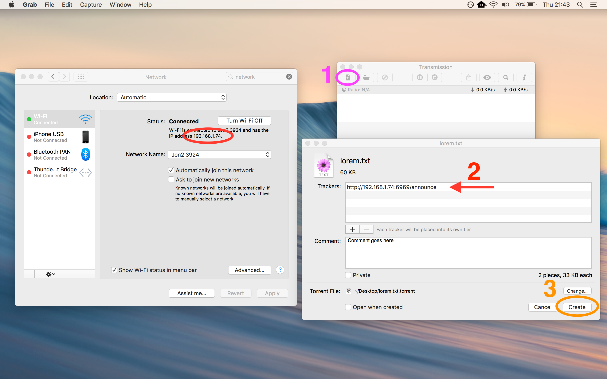My testing set up is shown below. I have a Terminal open ready to run the tracker on OS X and I have two VirtualBox machines running with Transmission open in both. Only one of the boxes has the actual underlying file we want to share. One other thing to note is that I had to set both network adapters on the virtual machines to Bridged mode (VirtualBox VM -> Machine -> Settings... -> Network -> Attached To).
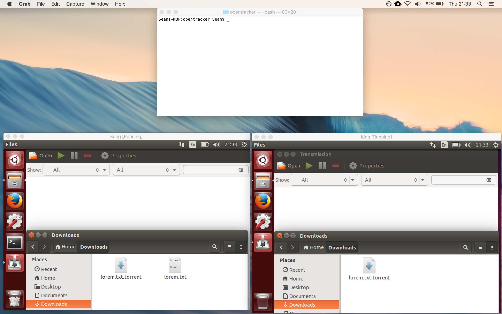Next, add the torrent to each of the clients in our two virtual machines. You should be able to see that one is trying to seed the file and the other is trying to download the file.
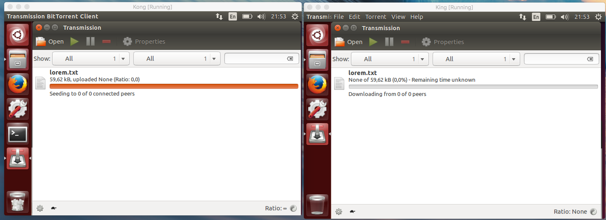Finally, pause both of the clients and then start the tracker in the Terminal:
./opentracker
The program doesn't require any arguments and starts running at http://localhost:6969/ by default. You can open http://localhost:6969/stats?mode=everything in your browser to double check it's running if you need to (it'll just spit out some xml output after a few seconds).
You'll probably need to pause and restart each of the clients after starting the tracker. After a few seconds the file should have been successfully copied to the second virtual machine.
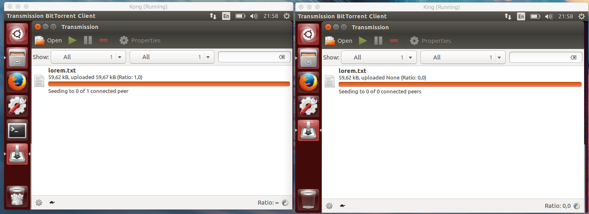Great! So now we know everything is working so we can go back to start and try to recreate some of this.
BEncoding
Let's open up the torrent file we created earlier in a text editor:
d8:announce33:http://192.168.1.74:6969/announce7:comment17:Comment goes here10:created by25:Transmission/2.92 (14714)13:creation datei1460444420e8:encoding5:UTF-84:infod6:lengthi59616e4:name9:lorem.txt12:piece lengthi32768e6:pieces40:L@fR���3�K*Ez�>_YS��86��"�&�p�<�6�C{�9G7:privatei0eee
It's pretty ugly in there. It's clearly encoded in some unusual format. If we take a look at the spec we can see it uses a custom encoding system called BEncoding. Fortunately, it's pretty straight forward. There are only four types that can be encoded.
- Strings:
8:announce
They start with the their length followed by:, followed by the string. They use the term "string" quite loosely here – in some cases they are UTF-8 encoded strings while in other cases they are raw byte arrays (SHA1 hashes). We will store these asbyte[]s because there is no way of knowning beforehand whether it's a UTF-8 string or not. In C#, astringcan only contain valid Unicode characters. Using a string to store raw byte arrays can (and almost definitely will) result in a loss of data as any invalid Unicode will be irreversibly replaced by the replacement character U+FFFD (�). Note that the length value specifically refers to the number of bytes, not the number of characters (as some characters take up more than one byte in UTF-8). - Integers:
i32768e
These start withiand end withe. Due to the fact that they can represent the number of bytes in a file and some files can be greater than 2.14 GB, we will store these aslongs. - Dictionaries:
d3:key5:valuee
These start withdand end witheand contains a list of alternating keys and their values. All keys must be valid UTF-8 strings. The dictionary must also be sorted by key (the raw UTF-8 encoded bytes). We will store these asDictionary<string,object>s. Dictionaries can't be sorted in C# so we will only sort the keys when we are saving them to a file. - Lists:
l5:ItemA5:ItemBe
These start withland end withe. We will store these asList<object>s.
If we apply some whitespace formatting to our file, we can see the structure more clearly. Of course, whitespace isn't allowed in the encoding so this is just for show.
d
8:announce 33:http://192.168.1.74:6969/announce
7:comment 17:Comment goes here
10:created by 25:Transmission/2.92 (14714)
13:creation date i1460444420e
8:encoding 5:UTF-8
4:info
d
6:length i59616e
4:name 9:lorem.txt
12:piece length i32768e
6:pieces 40:L@fR���3�K*Ez�>_YS��86��"�&�p�<�6�C{�9G
7:private i0e
e
e
This gives us a much clearer picture of the structure.
Decoding
Our Decode() method is going to take in a byte array. We're going to parse it one byte at a time so we set up an iterator and push it to the first byte. We then call DecodeNextObject() which evaluates the type of the next object and calls the decoding relevant function. We've separated this out into a separate function so that we can recursively process the objects in any nested lists or dictionaries.
using System;
using System.Text;
using System.Linq;
using System.Collections.Generic;
using System.IO;
namespace BitTorrent
{
public static class BEncoding
{
private static byte DictionaryStart = System.Text.Encoding.UTF8.GetBytes("d")[0]; // 100
private static byte DictionaryEnd = System.Text.Encoding.UTF8.GetBytes("e")[0]; // 101
private static byte ListStart = System.Text.Encoding.UTF8.GetBytes("l")[0]; // 108
private static byte ListEnd = System.Text.Encoding.UTF8.GetBytes("e")[0]; // 101
private static byte NumberStart = System.Text.Encoding.UTF8.GetBytes("i")[0]; // 105
private static byte NumberEnd = System.Text.Encoding.UTF8.GetBytes("e")[0]; // 101
private static byte ByteArrayDivider = System.Text.Encoding.UTF8.GetBytes(":")[0]; // 58
public static object Decode(byte[] bytes)
{
IEnumerator<byte> enumerator = ((IEnumerable<byte>)bytes).GetEnumerator();
enumerator.MoveNext();
return DecodeNextObject(enumerator);
}
private static object DecodeNextObject(IEnumerator<byte> enumerator)
{
if (enumerator.Current == DictionaryStart)
return DecodeDictionary(enumerator);
if (enumerator.Current == ListStart)
return DecodeList(enumerator);
if (enumerator.Current == NumberStart)
return DecodeNumber(enumerator);
return DecodeByteArray(enumerator);
}
}
}
We'll also create a method to decode a file (such as a torrent file).
public static object DecodeFile(string path)
{
if (!File.Exists(path))
throw new FileNotFoundException("unable to find file: " + path);
byte[] bytes = File.ReadAllBytes(path);
return BEncoding.Decode(bytes);
}Numbers
If we know a number is the next object, then we keep moving through the array until we hit the character that denotes the end of the number (e), collecting the bytes as we go. We then convert these bytes to a string and then the string to a long. We're using a long as some of the numbers represent the number of bytes in a file, which can be greater than the maximum value for an int.
private static long DecodeNumber(IEnumerator enumerator)
{
List<byte> bytes = new List<byte>();
// keep pulling bytes until we hit the end flag
while (enumerator.MoveNext())
{
if (enumerator.Current == NumberEnd)
break;
bytes.Add(enumerator.Current);
}
string numAsString = Encoding.UTF8.GetString(bytes.ToArray());
return Int64.Parse(numAsString);
} Strings
For strings (byte arrays), we have to parse two separate parts. The first is the number denoting the length of the byte array and then the bytes themselves. So first, we iterate through until we hit the character that denotes the end of the length number. We're using a do..while loop because we need the first character. Then, same as for decoding numbers, we convert the bytes to a string and then the string to a int to get the length. The length represents the number of bytes in the array. We can just move through the array until we have the required bytes.
private static byte[] DecodeByteArray(IEnumerator<byte> enumerator)
{
List<byte> lengthBytes = new List<byte>();
// scan until we get to divider
do
{
if( enumerator.Current == ByteArrayDivider )
break;
lengthBytes.Add(enumerator.Current);
}
while (enumerator.MoveNext());
string lengthString = System.Text.Encoding.UTF8.GetString(lengthBytes.ToArray());
int length;
if (!Int32.TryParse(lengthString, out length))
throw new Exception("unable to parse length of byte array");
// now read in the actual byte array
byte[] bytes = new byte[length];
for (int i = 0; i < length; i++)
{
enumerator.MoveNext();
bytes[i] = enumerator.Current;
}
return bytes;
}Lists
For lists, we simply keep grabbing the next object until we get to the end character. We don't need to know the type of the object in the list, we just eat them up. The spec doesn't specify whether they all of the items must be the same type and in our implementation, we don't check.
private static List<object> DecodeList(IEnumerator<byte> enumerator)
{
List<object> list = new List<object>();
// keep decoding objects until we hit the end flag
while (enumerator.MoveNext())
{
if( enumerator.Current == ListEnd )
break;
list.Add(DecodeNextObject(enumerator));
}
return list;
}Dictionaries
Dictionaries are handled in much the same way, the only difference is that we pull two objects out at a time (one key and one value) and push them into a dictionary. The keys must be valid UTF-8 strings.
Items in the dictionary must be sorted by the raw UTF-8 bytes in the key. It is important that we double check the incoming dictionary is sorted correctly because we'll need to reverse the decoding process later and generate output identical to the input. If the incoming dictionary isn't sorted correctly we'll lose the (incorrect) sorting information and hence we won't be able to do this.
private static Dictionary<string,object> DecodeDictionary(IEnumerator<byte> enumerator)
{
Dictionary<string,object> dict = new Dictionary<string,object>();
List<string> keys = new List<string>();
// keep decoding objects until we hit the end flag
while (enumerator.MoveNext())
{
if( enumerator.Current == DictionaryEnd )
break;
// all keys are valid UTF8 strings
string key = Encoding.UTF8.GetString(DecodeByteArray(enumerator));
enumerator.MoveNext();
object val = DecodeNextObject(enumerator);
keys.Add(key);
dict.Add(key, val);
}
// verify incoming dictionary is sorted correctly
// we will not be able to create an identical encoding otherwise
var sortedKeys = keys.OrderBy(x => BitConverter.ToString(Encoding.UTF8.GetBytes(x)));
if (!keys.SequenceEqual(sortedKeys))
throw new Exception("error loading dictionary: keys not sorted");
return dict;
}Encoding
So now let's reverse this process so that we can create BEncoded output from C# structures. We're going to use a MemoryStream to generate our byte array. We're using an EncodeNextObject() method that identifies the current object type and calls the relevant encoding method. This allows us to encode recursively.
public static byte[] Encode(object obj)
{
MemoryStream buffer = new MemoryStream();
EncodeNextObject(buffer, obj);
return buffer.ToArray();
}
public static void EncodeToFile(object obj, string path)
{
File.WriteAllBytes(path, Encode(obj));
}
private static void EncodeNextObject(MemoryStream buffer, object obj)
{
if (obj is byte[])
EncodeByteArray(buffer, (byte[])obj);
else if (obj is string)
EncodeString(buffer, (string)obj);
else if (obj is long)
EncodeNumber(buffer, (long)obj);
else if (obj.GetType() == typeof(List<object>))
EncodeList(buffer, (List<object>)obj);
else if (obj.GetType() == typeof(Dictionary<string,object>))
EncodeDictionary(buffer, (Dictionary<string,object>)obj);
else
throw new Exception("unable to encode type " + obj.GetType());
}We're going to add some extensions to the MemoryStream class that will make writing byte arrays a little bit tidier.
// source: Fredrik Mörk (http://stackoverflow.com/a/4015634)
public static class MemoryStreamExtensions
{
public static void Append(this MemoryStream stream, byte value)
{
stream.Append(new[] { value });
}
public static void Append(this MemoryStream stream, byte[] values)
{
stream.Write(values, 0, values.Length);
}
}Numbers
Only long numbers can be encoded. We simply insert the starting i, then the number converted to a UTF-8 string and finally the e.
private static void EncodeNumber(MemoryStream buffer, long input)
{
buffer.Append(NumberStart);
buffer.Append(Encoding.UTF8.GetBytes(Convert.ToString(input)));
buffer.Append(NumberEnd);
}Byte Arrays & Strings
For byte[]s, we output the array length as a UTF-8 string, followed by a : and finally the raw array itself. We convert any strings to UTF-8 encoded byte arrays and then handle them in the same way.
private static void EncodeByteArray(MemoryStream buffer, byte[] body)
{
buffer.Append(Encoding.UTF8.GetBytes(Convert.ToString(body.Length)));
buffer.Append(ByteArrayDivider);
buffer.Append(body);
}
private static void EncodeString(MemoryStream buffer, string input)
{
EncodeByteArray(buffer, Encoding.UTF8.GetBytes(input));
}Lists
Lists are very straight forward. We output the initial l, then encode each element in the List and finish with an e.
private static void EncodeList(MemoryStream buffer, List<object> input)
{
buffer.Append(ListStart);
foreach (var item in input)
EncodeNextObject(buffer, item);
buffer.Append(ListEnd);
}Dictionaries
Dictionaries are handled in a similar fashion, starting with a d, followed by each key and value and then finally an e. In C#, dictionaries cannot be sorted and there are no assumptions about order when iterating over a Dictionary so we sort the keys ourselves and then iterate through them, selecting the required value for each.
private static void EncodeDictionary(MemoryStream buffer, Dictionary<string,object> input)
{
buffer.Append(DictionaryStart);
// we need to sort the keys by their raw bytes, not the string
var sortedKeys = input.Keys.ToList().OrderBy(x => BitConverter.ToString(Encoding.UTF8.GetBytes(x)));
foreach (var key in sortedKeys)
{
EncodeString(buffer, key);
EncodeNextObject(buffer, input[key]);
}
buffer.Append(DictionaryEnd);
}Torrents
Now that we have a BEncoding decoder built, we can go back to our torrent file from earlier and parse it into a C# data structure. Let's have a look at it again:
d
8:announce 33:http://192.168.1.74:6969/announce
7:comment 17:Comment goes here
10:created by 25:Transmission/2.92 (14714)
13:creation date i1460444420e
8:encoding 5:UTF-8
4:info
d
6:length i59616e
4:name 9:lorem.txt
12:piece length i32768e
6:pieces 40:L@fR���3�K*Ez�>_YS��86��"�&�p�<�6�C{�9G
7:private i0e
e
e
Let's go through the items one by one and decide how we're going to store them:
announce: This is the url of our tracker. Note this can either be a single tracker or a list of trackers (List<Tracker>).comment: User specified description (string).created by: Created by (either user or application) (string).creation date: Creation date as a unix timestamp (DateTime).encoding: Encoding (System.Text.Encoding).info: Information about the file or files we want to share.length: The size of the file (in bytes) (long). A torrent can either have a single file or multiple files so we're going to use aList<FileItem>.name: The name of the file (string).piece length: The size of each piece (in bytes) - usually a power of 2 (int).pieces: A 20 character SHA1 hash is generated for each piece. These are joined together into one large byte array (byte[][]).private: Whether or not the file is private (bool).
Structure
So let's create a simple class to hold this information:
using System;
using System.Linq;
using System.Text;
using System.Security.Cryptography;
using System.Collections;
using System.Collections.Generic;
using System.Collections.Specialized;
using System.IO;
using System.Net;
namespace BitTorrent
{
public class Torrent
{
public string Name { get; private set; }
public bool? IsPrivate { get; private set; }
public List<FileItem> Files { get; private set; } = new List<FileItem>();
public string FileDirectory { get { return (Files.Count > 1 ? Name + Path.DirectorySeparatorChar : ""); } }
public string DownloadDirectory { get; private set; }
public List<Tracker> Trackers { get; } = new List<Tracker>();
public string Comment { get; set; }
public string CreatedBy { get; set; }
public DateTime CreationDate { get; set; }
public Encoding Encoding { get; set; }
public int BlockSize { get; private set; }
public int PieceSize { get; private set; }
public byte[][] PieceHashes { get; private set; }
}
}
There are the two helper classes mentioned above. The first is the FileItem class. It stores the path and size of each file as well as its offset (i.e. the sum of file sizes before it)
public class FileItem
{
public string Path;
public long Size;
public long Offset;
public string FormattedSize { get { return Torrent.BytesToString(Size); } }
}
The second is the Tracker class, which stores the announce url. We'll add some more functionality to this class later so that it actually communicates with the tracker.
public class Tracker
{
public event EventHandler<List<IPEndPoint>> PeerListUpdated;
public string Address { get; private set; }
public Tracker(string address)
{
Address = address;
}
}
Hashes
There is one other piece of information required from the torrent file. The infohash or often just called the hash. This is a SHA1 hash of the raw bytes of the info section of the torrent file. It is used to identify the torrent. We're also going to add in some properies for converting the infohash into a readable hex string and the version required when communicating with trackers via HTTP.
public byte[] Infohash { get; private set; } = new byte[20];
public string HexStringInfohash { get { return String.Join("", this.Infohash.Select(x => x.ToString("x2"))); } }
public string UrlSafeStringInfohash { get { return Encoding.UTF8.GetString(WebUtility.UrlEncodeToBytes(this.Infohash, 0, 20)); } }
Pieces & Blocks
The files included in the torrent are placed in a list and then broken up into equal sized chunks called pieces (with the possible exception of the last piece). The integrity of each piece can be verified using the SHA1 hash of the bytes in that piece (which is found in the torrent file).
Blocks are smaller units than pieces. Pieces can be too large to transfer between peers so these smaller chunks of data are what are actually transferred. There is no specified size set for a block so our client may be using a different size to a peer. It doesn't matter if we're using a different size since they are requested using piece index, a byte offset and a length. Blocks can only be requested or sent if the entire piece is verified and a piece can obviously only be verified once all the blocks within that piece have been fully acquired.
We will add in some variables and methods to keep track of the size and progress of the pieces and blocks in the torrent.
public int BlockSize { get; private set; }
public int PieceSize { get; private set; }
public long TotalSize { get { return Files.Sum(x => x.Size); } }
public string FormattedPieceSize { get { return BytesToString(PieceSize); } }
public string FormattedTotalSize { get { return BytesToString(TotalSize); } }
public int PieceCount { get { return PieceHashes.Length; } }
public byte[][] PieceHashes { get; private set; }
public bool[] IsPieceVerified { get; private set; }
public bool[][] IsBlockAcquired { get; private set; }
public string VerifiedPiecesString { get { return String.Join("", IsPieceVerified.Select(x => x ? 1 : 0)); } }
public int VerifiedPieceCount { get { return IsPieceVerified.Count(x => x); } }
public double VerifiedRatio { get { return VerifiedPieceCount / (double)PieceCount; } }
public bool IsCompleted { get { return VerifiedPieceCount == PieceCount; } }
public bool IsStarted { get { return VerifiedPieceCount > 0; } }
public long Uploaded { get; set; } = 0;
public long Downloaded { get { return PieceSize * VerifiedPieceCount; } } // !! incorrect
public long Left { get { return TotalSize - Downloaded; } }
public int GetPieceSize(int piece)
{
if (piece == PieceCount - 1)
{
int remainder = Convert.ToInt32(TotalSize % PieceSize);
if (remainder != 0)
return remainder;
}
return PieceSize;
}
public int GetBlockSize(int piece, int block)
{
if (block == GetBlockCount(piece) - 1)
{
int remainder = Convert.ToInt32(GetPieceSize(piece) % BlockSize);
if (remainder != 0)
return remainder;
}
return BlockSize;
}
public int GetBlockCount(int piece)
{
return Convert.ToInt32(Math.Ceiling(GetPieceSize(piece) / (double)BlockSize));
}
Setup
The constructor for our Torrent class requires all of the data that's included in the info section of the torrent file. It sets up the trackers, either loading in or creating the individual piece hashes, generating the infohash and then finally verifying the current download progress.
There's also a PeerListUpdated event that gets fired whenever any of the trackers receive an updated peer list.
public event EventHandler<List<IPEndPoint>> PeerListUpdated;
private object[] fileWriteLocks;
private static SHA1 sha1 = SHA1.Create();
public Torrent(string name, string location, List<FileItem> files, List<string> trackers, int pieceSize, byte[] pieceHashes = null, int blockSize = 16384, bool? isPrivate = false )
{
Name = name;
DownloadDirectory = location;
Files = files;
fileWriteLocks = new object[Files.Count];
for (int i = 0; i < this.Files.Count; i++)
fileWriteLocks[i] = new object();
if (trackers != null)
{
foreach (string url in trackers)
{
Tracker tracker = new Tracker(url);
Trackers.Add(tracker);
tracker.PeerListUpdated += HandlePeerListUpdated;
}
}
PieceSize = pieceSize;
BlockSize = blockSize;
IsPrivate = isPrivate;
int count = Convert.ToInt32(Math.Ceiling(TotalSize / Convert.ToDouble(PieceSize)));
PieceHashes = new byte[count][];
IsPieceVerified = new bool[count];
IsBlockAcquired = new bool[count][];
for (int i = 0; i < PieceCount; i++)
IsBlockAcquired[i] = new bool[GetBlockCount(i)];
if (pieceHashes == null)
{
// this is a new torrent so we have to create the hashes from the files
for (int i = 0; i < PieceCount; i++)
PieceHashes[i] = GetHash(i);
}
else
{
for (int i = 0; i < PieceCount; i++)
{
PieceHashes[i] = new byte[20];
Buffer.BlockCopy(pieceHashes, i * 20, PieceHashes[i], 0, 20);
}
}
object info = TorrentInfoToBEncodingObject(this);
byte[] bytes = BEncoding.Encode(info);
Infohash = SHA1.Create().ComputeHash(bytes);
for (int i = 0; i < PieceCount; i++)
Verify(i);
}
Reading & Writing
As you can see in the diagram below, blocks and pieces don't care about when one file ends and the next begins – any number of files can be contained in a single piece.
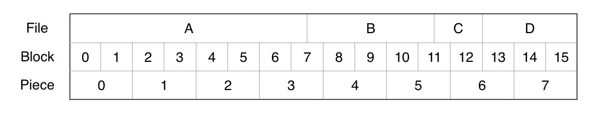Our Read() and Write() methods simply take a starting position and then either the number of bytes to read or the raw bytes to write. The methods are quite similar as they both loop through all of the files, selecting the ones that contain bytes we're interested in and then calculating the start and end position in each file. The Read() method loads bytes from each file into a buffer and then returns it while the Write() method slices chunks out of the given byte[] and writes them to the correct position in each file. We're also using locks to prevent writing to the same file simultaneously.
public byte[] Read(long start, int length)
{
long end = start + length;
byte[] buffer = new byte[length];
for (int i=0; i<Files.Count; i++)
{
if ((start < Files[i].Offset && end < Files[i].Offset) ||
(start > Files[i].Offset + Files[i].Size && end > Files[i].Offset + Files[i].Size))
continue;
string filePath = DownloadDirectory + Path.DirectorySeparatorChar + FileDirectory + Files[i].Path;
if (!File.Exists(filePath))
return null;
long fstart = Math.Max(0, start - Files[i].Offset);
long fend = Math.Min(end - Files[i].Offset, Files[i].Size);
int flength = Convert.ToInt32(fend - fstart);
int bstart = Math.Max(0, Convert.ToInt32(Files[i].Offset - start));
using (Stream stream = new FileStream(filePath, FileMode.Open, FileAccess.Read, FileShare.ReadWrite))
{
stream.Seek(fstart, SeekOrigin.Begin);
stream.Read(buffer, bstart, flength);
}
}
return buffer;
}
public void Write(long start, byte[] bytes)
{
long end = start + bytes.Length;
for (int i = 0; i < Files.Count; i++)
{
if ((start < Files[i].Offset && end < Files[i].Offset) ||
(start > Files[i].Offset + Files[i].Size && end > Files[i].Offset + Files[i].Size))
continue;
string filePath = DownloadDirectory + Path.DirectorySeparatorChar + FileDirectory + Files[i].Path;
string dir = Path.GetDirectoryName(filePath);
if (!Directory.Exists(dir))
Directory.CreateDirectory(dir);
lock (fileWriteLocks[i])
{
using (Stream stream = new FileStream(filePath, FileMode.OpenOrCreate, FileAccess.ReadWrite))
{
long fstart = Math.Max(0, start - Files[i].Offset);
long fend = Math.Min(end - Files[i].Offset, Files[i].Size);
int flength = Convert.ToInt32(fend - fstart);
int bstart = Math.Max(0, Convert.ToInt32(Files[i].Offset - start));
stream.Seek(fstart, SeekOrigin.Begin);
stream.Write(bytes, bstart, flength);
}
}
}
}
There are also some helper functions for reading and writing:
public byte[] ReadPiece(int piece)
{
return Read(piece * PieceSize, GetPieceSize(piece));
}
public byte[] ReadBlock(int piece, int offset, int length)
{
return Read(piece * PieceSize + offset, length);
}
public void WriteBlock(int piece, int block, byte[] bytes)
{
Write(piece * PieceSize + block * BlockSize, bytes);
IsBlockAcquired[piece][block] = true;
Verify(piece);
}
Verifying
Verification of each piece is relatively straight forward. One important thing to note is that if we have acquired all of the blocks in a piece and it fails to verify, we reset all the blocks and try to acquire them again (as we must have received an incorrect block from a peer).
public event EventHandler<int> PieceVerified;
public void Verify(int piece)
{
byte[] hash = GetHash(piece);
bool isVerified = (hash != null && hash.SequenceEqual(PieceHashes[piece]));
if (isVerified)
{
IsPieceVerified[piece] = true;
for (int j = 0; j < IsBlockAcquired[piece].Length; j++)
IsBlockAcquired[piece][j] = true;
var handler = PieceVerified;
if (handler != null)
handler(this, piece);
return;
}
IsPieceVerified[piece] = false;
// reload the entire piece
if (IsBlockAcquired[piece].All(x => x))
{
for (int j = 0; j < IsBlockAcquired[piece].Length; j++)
IsBlockAcquired[piece][j] = false;
}
}
public byte[] GetHash(int piece)
{
byte[] data = ReadPiece(piece);
if (data == null)
return null;
return sha1.ComputeHash(data);
}
Importing & Exporting
The methods for loading and saving Torrents to files are simple.
public static Torrent LoadFromFile(string filePath, string downloadPath)
{
object obj = BEncoding.DecodeFile(filePath);
string name = Path.GetFileNameWithoutExtension(filePath);
return BEncodingObjectToTorrent(obj, name, downloadPath);
}
public static void SaveToFile(Torrent torrent)
{
object obj = TorrentToBEncodingObject(torrent);
BEncoding.EncodeToFile(obj, torrent.Name + ".torrent");
}
The heavy lifting is done when converting them to and from the BEncoding objects. The code for encoding the info section is split out separately into the TorrentInfoToBEncodingObject() method so we can use it generate infohashes.
public static long DateTimeToUnixTimestamp( DateTime time )
{
return Convert.ToInt64((DateTime.UtcNow.Subtract(new DateTime(1970, 1, 1))).TotalSeconds);
}
private static object TorrentToBEncodingObject(Torrent torrent)
{
Dictionary<string,object> dict = new Dictionary<string, object>();
if( torrent.Trackers.Count == 1 )
dict["announce"] = Encoding.UTF8.GetBytes(torrent.Trackers[0].Address);
else
dict["announce"] = torrent.Trackers.Select(x => (object)Encoding.UTF8.GetBytes(x.Address)).ToList();
dict["comment"] = Encoding.UTF8.GetBytes(torrent.Comment);
dict["created by"] = Encoding.UTF8.GetBytes(torrent.CreatedBy);
dict["creation date"] = DateTimeToUnixTimestamp(torrent.CreationDate);
dict["encoding"] = Encoding.UTF8.GetBytes(Encoding.UTF8.WebName.ToUpper());
dict["info"] = TorrentInfoToBEncodingObject(torrent);
return dict;
}
private static object TorrentInfoToBEncodingObject(Torrent torrent)
{
Dictionary<string,object> dict = new Dictionary<string, object>();
dict["piece length"] = (long)torrent.PieceSize;
byte[] pieces = new byte[20 * torrent.PieceCount];
for (int i = 0; i < torrent.PieceCount; i++)
Buffer.BlockCopy(torrent.PieceHashes[i], 0, pieces, i * 20, 20);
dict["pieces"] = pieces;
if (torrent.IsPrivate.HasValue)
dict["private"] = torrent.IsPrivate.Value ? 1L : 0L;
if (torrent.Files.Count == 1)
{
dict["name"] = Encoding.UTF8.GetBytes(torrent.Files[0].Path);
dict["length"] = torrent.Files[0].Size;
}
else
{
List<object> files = new List<object>();
foreach (var f in torrent.Files)
{
Dictionary<string,object> fileDict = new Dictionary<string, object>();
fileDict["path"] = f.Path.Split(Path.DirectorySeparatorChar).Select(x => (object)Encoding.UTF8.GetBytes(x)).ToList();
fileDict["length"] = f.Size;
files.Add(fileDict);
}
dict["files"] = files;
dict["name"] = Encoding.UTF8.GetBytes(torrent.FileDirectory.Substring(0, torrent.FileDirectory.Length - 1));
}
return dict;
}
And the opposite direction.
public static string DecodeUTF8String( object obj )
{
byte[] bytes = obj as byte[];
if (bytes == null)
throw new Exception("unable to decode utf-8 string, object is not a byte array");
return Encoding.UTF8.GetString(bytes);
}
public static DateTime UnixTimeStampToDateTime( double unixTimeStamp )
{
// Unix timestamp is seconds past epoch
System.DateTime dtDateTime = new DateTime(1970,1,1,0,0,0,0,System.DateTimeKind.Utc);
dtDateTime = dtDateTime.AddSeconds( unixTimeStamp ).ToLocalTime();
return dtDateTime;
}
private static Torrent BEncodingObjectToTorrent(object bencoding, string name, string downloadPath)
{
Dictionary<string,object> obj = (Dictionary<string,object>)bencoding;
if (obj == null)
throw new Exception("not a torrent file");
// !! handle list
List<string> trackers = new List<string>();
if (obj.ContainsKey("announce"))
trackers.Add(DecodeUTF8String(obj["announce"]));
if (!obj.ContainsKey("info"))
throw new Exception("Missing info section");
Dictionary<string,object> info = (Dictionary<string,object>)obj["info"];
if (info == null)
throw new Exception("error");
List<FileItem> files = new List<FileItem>();
if (info.ContainsKey("name") && info.ContainsKey("length"))
{
files.Add(new FileItem() {
Path = DecodeUTF8String(info["name"]),
Size = (long)info["length"]
});
}
else if (info.ContainsKey("files"))
{
long running = 0;
foreach (object item in (List<object>)info["files"])
{
var dict = item as Dictionary<string,object>;
if (dict == null || !dict.ContainsKey("path") || !dict.ContainsKey("length") )
throw new Exception("error: incorrect file specification");
string path = String.Join(Path.DirectorySeparatorChar.ToString(), ((List<object>)dict["path"]).Select(x => DecodeUTF8String(x)));
long size = (long)dict["length"];
files.Add(new FileItem() {
Path = path,
Size = size,
Offset = running
});
running += size;
}
}
else
{
throw new Exception("error: no files specified in torrent");
}
if (!info.ContainsKey("piece length"))
throw new Exception("error");
int pieceSize = Convert.ToInt32(info["piece length"]);
if (!info.ContainsKey("pieces"))
throw new Exception("error");
byte[] pieceHashes = (byte[])info["pieces"];
bool? isPrivate = null;
if (info.ContainsKey("private"))
isPrivate = ((long)info["private"]) == 1L;
Torrent torrent = new Torrent(name, downloadPath, files, trackers, pieceSize, pieceHashes, 16384, isPrivate );
if (obj.ContainsKey("comment"))
torrent.Comment = DecodeUTF8String(obj["comment"]);
if (obj.ContainsKey("created by"))
torrent.CreatedBy = DecodeUTF8String(obj["created by"]);
if (obj.ContainsKey("creation date"))
torrent.CreationDate = UnixTimeStampToDateTime(Convert.ToDouble(obj["creation date"]));
if (obj.ContainsKey("encoding"))
torrent.Encoding = Encoding.GetEncoding(DecodeUTF8String(obj["encoding"]));
return torrent;
}
Creating
If we want to create a new torrent ourselves, we can use the Create() static method. You can pass in a single file path or a directory.
public static Torrent Create(string path, List<string> trackers = null, int pieceSize = 32768, string comment = "")
{
string name = "";
List<FileItem> files = new List<FileItem>();
if (File.Exists(path))
{
name = Path.GetFileName(path);
long size = new FileInfo(path).Length;
files.Add(new FileItem()
{
Path = Path.GetFileName(path),
Size = size
});
}
else
{
name = path;
string directory = path + Path.DirectorySeparatorChar;
long running = 0;
foreach (string file in Directory.EnumerateFiles(path, "*.*", SearchOption.AllDirectories))
{
string f = file.Substring(directory.Length);
if (f.StartsWith("."))
continue;
long size = new FileInfo(file).Length;
files.Add(new FileItem()
{
Path = f,
Size = size,
Offset = running
});
running += size;
}
}
Torrent torrent = new Torrent(name, "", files, trackers, pieceSize);
torrent.Comment = comment;
torrent.CreatedBy = "TestClient";
torrent.CreationDate = DateTime.Now;
torrent.Encoding = Encoding.UTF8;
return torrent;
}
Trackers
So once we have all the torrent information ready, how do we find peers to connect to? We need to connect to a tracker for two reasons. First, it will provide us with a list of peers that we can immediately try to connect to. Second, it will add us to its list of peers so that any new peers in the future can obtain our IP address and relevant port number. We also inform it of our current progress obtaining the file so it can keep track of the number of seeders and leechers for dissemination.
Announcing
The most basic version of a tracker is a HTTP server with a single endpoint. The opentracker tracker we're running locally uses the http://localhost:6969/announce endpoint. There are a number of parameters we need to add to the HTTP GET request:
info_hash: this is our torrent infohash. Any raw bytes that would affect the url need to be escaped. OurUrlSafeStringInfohashproperty provides this.peer_id: a 20bytestring to identify ourselves. Most clients use the first few characters to identify the program and its version, followed by some random characters. We're just going to just a string of random numbers.port: the port we're listening on for incoming connections.uploaded: the number ofbytes we've sent to other peers.downloaded: the number of verifiedbytes we have.left: the number ofbytes we have left to download.event: the current state of the client. Eitherstarted,pausedorstopped. These let the tracker know whether to add or remove us from its list of peers.compact: either0or1indicating whether or not to return a compact peer list. The opentracker software we're using seems to only work with compact mode enabled.
We can use curl to test the request before we build anything ourselves.
$ curl -v "http://192.168.1.74:6969/announce?info_hash=%3E%09%D0%1CHHCy%CF%27%F23%24%E1%7B%BDijbD&peer_id=76433642664923430920&port=56723&uploaded=0&downloaded=0&left=0&event=started&compact=1" * Trying 192.168.1.74... * Connected to 192.168.1.74 (192.168.1.74) port 6969 (#0) > GET /announce?info_hash=%3E%09%D0%1CHHCy%CF%27%F23%24%E1%7B%BDijbD&peer_id=76433642664923430920&port=56723&uploaded=0&downloaded=0&left=0&event=started&compact=1 HTTP/1.1 > Host: 192.168.1.74:6969 > User-Agent: curl/7.43.0 > Accept: */* > < HTTP/1.1 200 OK < Content-Type: text/plain < Content-Length: 111 < * Connection #0 to host 192.168.1.74 left intact d8:completei2e10:downloadedi0e10:incompletei1e8:intervali1769e12:min intervali884e5:peers18:??J??Jݓ??J??e
The response is a BEncoded object. Formatting it with whitespace gives us:
d 8:complete i2e 10:downloaded i0e 10:incomplete i1e 8:interval i1769e 12:min interval i884e 5:peers 18:??J??Jݓ??J?? e
Going through this response, item by item:
complete: the number of peers with the complete filedownloaded: I couldn't find any documentation for thisincomplete: the number of peers without the complete file (leechers)interval: frequency the client should request an updated peer list from the trackermin interval: (optional) minimum frequency the client should request an updated peer listpeers: with the compact option specified, this is abyte[]. Every 6 bytes is a peer – the first four are the four numbers in an IPv4 address and the last two are a big endiancharrepresenting the port number.
Let's move on and recreate this call in our own code. First, we create a simple enum for the tracker event types.
public enum TrackerEvent
{
Started,
Paused,
Stopped
}
We can then revisit our Tracker class and add in the announcing logic. Our Update() method creates the required url. I've added in a check to prevent us from checking for new peers too often. We'll need a public method to reset this clock as well.
public DateTime LastPeerRequest { get; private set; } = DateTime.MinValue;
public TimeSpan PeerRequestInterval { get; private set; } = TimeSpan.FromMinutes(30);
public void Update(Torrent torrent, TrackerEvent ev, string id, int port)
{
// wait until after request interval has elapsed before asking for new peers
if (ev == TrackerEvent.Started && DateTime.UtcNow < LastPeerRequest.Add(PeerRequestInterval))
return;
LastPeerRequest = DateTime.UtcNow;
string url = String.Format("{0}?info_hash={1}&peer_id={2}&port={3}&uploaded={4}&downloaded={5}&left={6}&event={7}&compact=1",
Address, torrent.UrlSafeStringInfohash,
id, port,
torrent.Uploaded, torrent.Downloaded, torrent.Left,
Enum.GetName(typeof(TrackerEvent), ev).ToLower());
Request(url);
}
public void ResetLastRequest()
{
LastPeerRequest = DateTime.MinValue;
}
The Request() method creates the actual HTTP request. The HttpWebResponse.BeginGetResponse is asynchronous so it doesn't hang the thread. We simply specify a callback method (HandleResponse) that gets called when the tracker has responded. We read in the returned byte[] and process it using BEncoding.Decode(). Finally, we parse the request interval and the peer list and fire the PeerListUpdated event.
private void Request( string url )
{
httpWebRequest = (HttpWebRequest)HttpWebRequest.Create(url);
httpWebRequest.BeginGetResponse(HandleResponse, null);
}
private void HandleResponse(IAsyncResult result)
{
byte[] data;
using (HttpWebResponse response = (HttpWebResponse)httpWebRequest.EndGetResponse(result))
{
if (response.StatusCode != HttpStatusCode.OK)
{
Console.WriteLine("error reaching tracker " + this + ": " + response.StatusCode + " " + response.StatusDescription);
return;
}
using (Stream stream = response.GetResponseStream())
{
data = new byte[response.ContentLength];
stream.Read(data, 0, Convert.ToInt32(response.ContentLength));
}
}
Dictionary<string,object> info = BEncoding.Decode(data) as Dictionary<string,object>;
if (info == null)
{
Console.WriteLine("unable to decode tracker announce response");
return;
}
PeerRequestInterval = TimeSpan.FromSeconds((long)info["interval"]);
byte[] peerInfo = (byte[])info["peers"];
List<IPEndPoint> peers = new List<IPEndPoint>();
for (int i = 0; i < peerInfo.Length/6; i++)
{
int offset = i * 6;
string address = peerInfo[offset] + "." + peerInfo[offset+1] + "." + peerInfo[offset+2] + "." + peerInfo[offset+3];
int port = EndianBitConverter.Big.ToChar(peerInfo, offset + 4);
peers.Add(new IPEndPoint(IPAddress.Parse(address), port));
}
var handler = PeerListUpdated;
if (handler != null)
handler(this, peers);
}
That's it for the Tracker class. We'll add in a method into the Torrent class to update all the trackers in it.
public void UpdateTrackers(TrackerEvent ev, string id, int port)
{
foreach (var tracker in Trackers)
tracker.Update(this, ev, id, port);
}
public void ResetTrackersLastUpdated()
{}
Peers
Peers communicate with each other directly. They open TCP connections that allow simultaneous sending and receiving of messages.
Structure
There's a lot in here but it's not too bad when you break it down. We have a few events that fire when the peer disconnects, its state changes or there is a data request or arrival. We store some TCP network variables that process incoming bytes from the peer. Then we have variables that store the state and progress of the peer. We also track what what data requests we've made that are pending a response. Finally, there are some variable to keep track of how much data has been transfered between us.
I'm importing Jon Skeet's MiscUtil library for some conversion methods.
using System;
using System.Collections;
using System.Collections.Concurrent;
using System.Collections.Generic;
using System.Net;
using System.Net.Sockets;
using System.Linq;
using System.Text;
using System.IO;
using MiscUtil.Conversion;
namespace BitTorrent
{
public class Peer
{
public event EventHandler Disconnected;
public event EventHandler StateChanged;
public event EventHandler<DataRequest> BlockRequested;
public event EventHandler<DataRequest> BlockCancelled;
public event EventHandler<DataPackage> BlockReceived;
public string LocalId { get; set; }
public string Id { get; set; }
public Torrent Torrent { get; private set; }
public IPEndPoint IPEndPoint { get; private set; }
public string Key { get { return IPEndPoint.ToString(); } }
private TcpClient TcpClient { get; set; }
private NetworkStream stream { get; set; }
private const int bufferSize = 256;
private byte[] streamBuffer = new byte[bufferSize];
private List<byte> data = new List<byte>();
public bool[] IsPieceDownloaded = new bool[0];
public string PiecesDownloaded { get { return String.Join("", IsPieceDownloaded.Select(x => Convert.ToInt32(x))); } }
public int PiecesRequiredAvailable { get { return IsPieceDownloaded.Select((x, i) => x && !Torrent.IsPieceVerified[i]).Count(x => x); } }
public int PiecesDownloadedCount { get { return IsPieceDownloaded.Count(x => x); } }
public bool IsCompleted { get { return PiecesDownloadedCount == Torrent.PieceCount; } }
public bool IsDisconnected;
public bool IsHandshakeSent;
public bool IsPositionSent;
public bool IsChokeSent = true;
public bool IsInterestedSent = false;
public bool IsHandshakeReceived;
public bool IsChokeReceived = true;
public bool IsInterestedReceived = false;
public bool[][] IsBlockRequested = new bool[0][];
public int BlocksRequested { get { return IsBlockRequested.Sum(x => x.Count(y => y)); } }
public DateTime LastActive;
public DateTime LastKeepAlive = DateTime.MinValue;
public long Uploaded;
public long Downloaded;
}
}
A peer can be created in two different ways – either we open the connection (so we just specify an IPEndPoint to connect to) or they open the connection (so we accept a new TcpClient).
public Peer(Torrent torrent, string localId, TcpClient client) : this(torrent, localId)
{
TcpClient = client;
IPEndPoint = (IPEndPoint)client.Client.RemoteEndPoint;
}
public Peer(Torrent torrent, string localId, IPEndPoint endPoint): this(torrent, localId)
{
IPEndPoint = endPoint;
}
private Peer(Torrent torrent, string localId)
{
LocalId = localId;
Torrent = torrent;
LastActive = DateTime.UtcNow;
IsPieceDownloaded = new bool[Torrent.PieceCount];
IsBlockRequested = new bool[Torrent.PieceCount][];
for (int i = 0; i < Torrent.PieceCount; i++)
IsBlockRequested[i] = new bool[Torrent.GetBlockCount(i)];
}
Protocol
The actual protocol between peers is simply enough.
Handshake
Initially both sides must send a handshake message. This specifies any protocol extensions that they can use as well as confirms that they are talking about the same torrent.
Progress
Immediately after the handshake, they must inform each other of their progress downloading the torrent so far. Any later changes to progress must be immediately communicated as well.
State
All peers start not interested and choked. If a peer wants to request data, it informs a peer it is interested. If that peer is willing to response to data requests it informs the peer it is unchoked. Peers use these state flags to limit the number of seeders and leechers they are connected to to prevent congestion and to manage bandwidth.
Data
Once a peer is unchoked, it can start requesting blocks of data. The other peer responds with the requested data. Some peers may request the same block from multiple peers so they can also cancel a data request if they already receive it.
Connections
Once our peer is set up, we start aynschronously waiting for incoming data. We also immediately send our handshake (and position if we've received their handshake).
public void Connect()
{
if (TcpClient == null)
{
TcpClient = new TcpClient();
try
{
TcpClient.Connect(IPEndPoint);
}
catch (Exception e)
{
Disconnect();
return;
}
}
Log.WriteLine(this, "connected");
stream = TcpClient.GetStream();
stream.BeginRead(streamBuffer, 0, Peer.bufferSize, new AsyncCallback(HandleRead), null);
SendHandshake();
if (IsHandshakeReceived)
SendBitfield(Torrent.IsPieceVerified);
}
There is no protocol for disconnecting from a peer other than closing the TCP connection. We also fire our Disconnected event.
public void Disconnect()
{
if (!IsDisconnected)
{
IsDisconnected = true;
Log.WriteLine(this, "disconnected, down " + Downloaded + ", up " + Uploaded);
}
if (TcpClient != null)
TcpClient.Close();
if (Disconnected != null)
Disconnected(this, new EventArgs());
}
IO
To send bytes, we simply write to the network stream. There is no way of telling whether a TCP connection is open or closed so we wrap it in a try...catch in case it's closed.
private void SendBytes(byte[] bytes)
{
try
{
stream.Write(bytes, 0, bytes.Length);
}
catch(Exception e)
{
Disconnect();
}
}
Whenever we read in from the stream, we push the incoming bytes into a list. Once we have enough bytes, we identify the message length and wait until that has been received. Once a full message is received we pass it on to be decoded and processed. If multiple messages are received in a single read, we loop through them and process them until we're finished.
private void HandleRead( IAsyncResult ar )
{
int bytes = 0;
try
{
bytes = stream.EndRead(ar);
}
catch (Exception e)
{
Disconnect();
return;
}
data.AddRange(streamBuffer.Take(bytes));
int messageLength = GetMessageLength(data);
while (data.Count >= messageLength)
{
HandleMessage(data.Take(messageLength).ToArray());
data = data.Skip(messageLength).ToList();
messageLength = GetMessageLength(data);
}
try
{
stream.BeginRead(streamBuffer, 0, Peer.bufferSize, new AsyncCallback(HandleRead), null);
}
catch (Exception e)
{
Disconnect();
}
}
private int GetMessageLength(List<byte> data)
{
if (!IsHandshakeReceived)
return 68;
if (data.Count < 4)
return int.MaxValue;
return EndianBitConverter.Big.ToInt32(data.ToArray(), 0) + 4;
}
Message Types
There are 10 message types that have a byte identifying them, the remaining 2 are presumed to be obvious. The message type is defined by a byte. We're going to declare it as to an int enum so that we can use the first few negative values to indicate whether it's one of the other two types. I didn't want to keep it as a byte and simply use the highest possible values (255 and down) for our undeclared types because those values might be defined for new message types in a future specification.
public enum MessageType : int
{
Unknown = -3,
Handshake = -2,
KeepAlive = -1,
Choke = 0,
Unchoke = 1,
Interested = 2,
NotInterested = 3,
Have = 4,
Bitfield = 5,
Request = 6,
Piece = 7,
Cancel = 8,
Port = 9,
}
Encoding & Decoding
Handshake
The first message received from a new peer must be a handshake message. It includes flags about features the peer supports, the id of the client and confirms the infohash of the torrent.
Note that unlike all of the other messages, the length of the handshake is defined as a single byte rather than an int (4 bytes) and is always set to 19 even though the handshake message is 68 bytes long.

public static bool DecodeHandshake(byte[] bytes, out byte[] hash, out string id)
{
hash = new byte[20];
id = "";
if (bytes.Length != 68 || bytes[0] != 19)
{
Log.WriteLine("invalid handshake, must be of length 68 and first byte must equal 19");
return false;
}
if (Encoding.UTF8.GetString(bytes.Skip(1).Take(19).ToArray()) != "BitTorrent protocol")
{
Log.WriteLine("invalid handshake, protocol must equal \"BitTorrent protocol\"");
return false;
}
// flags
//byte[] flags = bytes.Skip(20).Take(8).ToArray();
hash = bytes.Skip(28).Take(20).ToArray();
id = Encoding.UTF8.GetString(bytes.Skip(48).Take(20).ToArray());
return true;
}
public static byte[] EncodeHandshake(byte[] hash, string id)
{
byte[] message = new byte[68];
message[0] = 19;
Buffer.BlockCopy(Encoding.UTF8.GetBytes("BitTorrent protocol"), 0, message, 1, 19);
Buffer.BlockCopy(hash,0, message, 28, 20);
Buffer.BlockCopy(Encoding.UTF8.GetBytes(id), 0, message, 48, 20);
return message;
}
Keep Alive
The keep-alive message is simply a message with no body i.e. its length is 0.
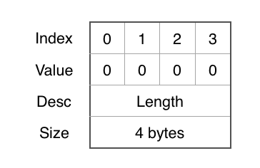public static bool DecodeKeepAlive(byte[] bytes)
{
if (bytes.Length != 4 || EndianBitConverter.Big.ToInt32(bytes,0) != 0 )
{
Log.WriteLine("invalid keep alive");
return false;
}
return true;
}
public static byte[] EncodeKeepAlive()
{
return EndianBitConverter.Big.GetBytes(0);
}
State
The four state messages are 1 byte long, which indicates the MessageType and hence the change in state. The message below is a not-interested message.
public static bool DecodeChoke(byte[] bytes)
{
return DecodeState(bytes, MessageType.Choke);
}
public static bool DecodeUnchoke(byte[] bytes)
{
return DecodeState(bytes, MessageType.Unchoke);
}
public static bool DecodeInterested(byte[] bytes)
{
return DecodeState(bytes, MessageType.Interested);
}
public static bool DecodeNotInterested(byte[] bytes)
{
return DecodeState(bytes, MessageType.NotInterested);
}
public static bool DecodeState(byte[] bytes, MessageType type)
{
if (bytes.Length != 5 || EndianBitConverter.Big.ToInt32(bytes, 0) != 1 || bytes[4] != (byte)type)
{
Log.WriteLine("invalid " + Enum.GetName(typeof(MessageType), type));
return false;
}
return true;
}
public static byte[] EncodeChoke()
{
return EncodeState(MessageType.Choke);
}
public static byte[] EncodeUnchoke()
{
return EncodeState(MessageType.Unchoke);
}
public static byte[] EncodeInterested()
{
return EncodeState(MessageType.Interested);
}
public static byte[] EncodeNotInterested()
{
return EncodeState(MessageType.NotInterested);
}
public static byte[] EncodeState(MessageType type)
{
byte[] message = new byte[5];
Buffer.BlockCopy(EndianBitConverter.Big.GetBytes(1), 0, message, 0, 4);
message[4] = (byte)type;
return message;
}
Progress
The have message specifies a piece index that the peer is communicating it has completed downloading and has verfied.
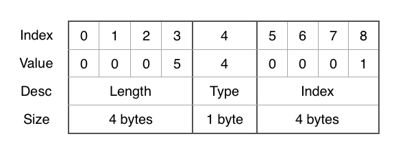The bitfield message is a quick way to communicate the peer's progress and is usually sent directly after the handshake. It is a little tricker. After the type byte, every bit specifies whether or not the peer has downloaded the piece at that index.
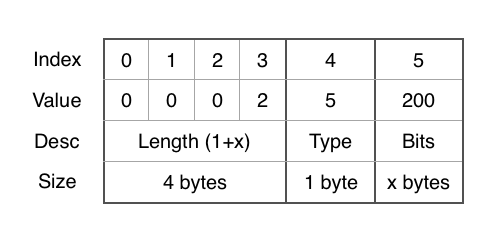So in the example above, the value of the byte is 200. If we convert that to binary, we get:
11001000
In this particular example, the peer is communicating it has the first, second and fifth pieces downloaded. If the number of pieces doesn't divide by 8, the end of the bitfield is padded with 0s.
public static bool DecodeHave(byte[] bytes, out int index)
{
index = -1;
if (bytes.Length != 9 || EndianBitConverter.Big.ToInt32(bytes, 0) != 5)
{
Log.WriteLine("invalid have, first byte must equal 0x2");
return false;
}
index = EndianBitConverter.Big.ToInt32(bytes, 5);
return true;
}
public static bool DecodeBitfield(byte[] bytes, int pieces, out bool[] isPieceDownloaded)
{
isPieceDownloaded = new bool[pieces];
int expectedLength = Convert.ToInt32(Math.Ceiling(pieces / 8.0)) + 1;
if (bytes.Length != expectedLength + 4 || EndianBitConverter.Big.ToInt32(bytes,0) != expectedLength)
{
Log.WriteLine("invalid bitfield, first byte must equal " + expectedLength);
return false;
}
BitArray bitfield = new BitArray(bytes.Skip(5).ToArray());
for (int i = 0; i < pieces; i++)
isPieceDownloaded[i] = bitfield[bitfield.Length - 1 - i];
return true;
}
public static byte[] EncodeHave(int index)
{
byte[] message = new byte[9];
Buffer.BlockCopy(EndianBitConverter.Big.GetBytes(5), 0, message, 0, 4);
message[4] = (byte)MessageType.Have;
Buffer.BlockCopy(EndianBitConverter.Big.GetBytes(index), 0, message, 5, 4);
return message;
}
public static byte[] EncodeBitfield(bool[] isPieceDownloaded)
{
int numPieces = isPieceDownloaded.Length;
int numBytes = Convert.ToInt32(Math.Ceiling(numPieces / 8.0));
int numBits = numBytes * 8;
int length = numBytes + 1;
byte[] message = new byte[length + 4];
Buffer.BlockCopy(EndianBitConverter.Big.GetBytes(length), 0, message, 0, 4);
message[4] = (byte)MessageType.Bitfield;
bool[] downloaded = new bool[numBits];
for (int i = 0; i < numPieces; i++)
downloaded[i] = isPieceDownloaded[i];
BitArray bitfield = new BitArray(downloaded);
BitArray reversed = new BitArray(numBits);
for (int i = 0; i < numBits; i++)
reversed[i] = bitfield[numBits - i - 1];
reversed.CopyTo(message, 5);
return message;
}
Data
A block of data can be requested by a peer. The peer specifies the piece index, a byte offset and the number of bytes to return.
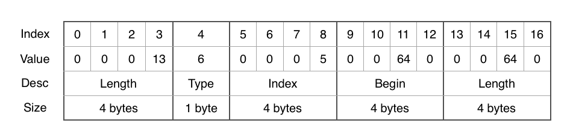The cancel message is identical to the corresponding request message apart from the message type.
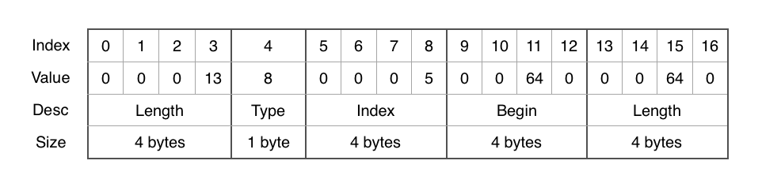A peer responds to a request with a piece message. The naming is a little confusing as it's actually sending a block and not a piece. It specifies the same piece index and byte offset and then contains the raw data.
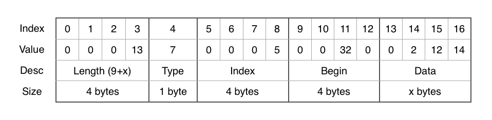public static bool DecodeRequest(byte[] bytes, out int index, out int begin, out int length)
{
index = -1;
begin = -1;
length = -1;
if (bytes.Length != 17 || EndianBitConverter.Big.ToInt32(bytes,0) != 13)
{
Log.WriteLine("invalid request message, must be of length 17");
return false;
}
index = EndianBitConverter.Big.ToInt32(bytes, 5);
begin = EndianBitConverter.Big.ToInt32(bytes, 9);
length = EndianBitConverter.Big.ToInt32(bytes, 13);
return true;
}
public static bool DecodePiece(byte[] bytes, out int index, out int begin, out byte[] data)
{
index = -1;
begin = -1;
data = new byte[0];
if (bytes.Length < 13)
{
Log.WriteLine("invalid piece message");
return false;
}
int length = EndianBitConverter.Big.ToInt32(bytes, 0) - 9;
index = EndianBitConverter.Big.ToInt32(bytes, 5);
begin = EndianBitConverter.Big.ToInt32(bytes, 9);
data = new byte[length];
Buffer.BlockCopy(bytes, 13, data, 0, length);
return true;
}
public static bool DecodeCancel(byte[] bytes, out int index, out int begin, out int length)
{
index = -1;
begin = -1;
length = -1;
if (bytes.Length != 17 || EndianBitConverter.Big.ToInt32(bytes,0) != 13)
{
Log.WriteLine("invalid cancel message, must be of length 17");
return false;
}
index = EndianBitConverter.Big.ToInt32(bytes, 5);
begin = EndianBitConverter.Big.ToInt32(bytes, 9);
length = EndianBitConverter.Big.ToInt32(bytes, 13);
return true;
}
public static byte[] EncodeRequest(int index, int begin, int length)
{
byte[] message = new byte[17];
Buffer.BlockCopy(EndianBitConverter.Big.GetBytes(13), 0, message, 0, 4);
message[4] = (byte)MessageType.Request;
Buffer.BlockCopy(EndianBitConverter.Big.GetBytes(index), 0, message, 5, 4);
Buffer.BlockCopy(EndianBitConverter.Big.GetBytes(begin), 0, message, 9, 4);
Buffer.BlockCopy(EndianBitConverter.Big.GetBytes(length), 0, message, 13, 4);
return message;
}
public static byte[] EncodePiece(int index, int begin, byte[] data)
{
int length = data.Length + 9;
byte[] message = new byte[length + 4];
Buffer.BlockCopy(EndianBitConverter.Big.GetBytes(length), 0, message, 0, 4);
message[4] = (byte)MessageType.Piece;
Buffer.BlockCopy(EndianBitConverter.Big.GetBytes(index), 0, message, 5, 4);
Buffer.BlockCopy(EndianBitConverter.Big.GetBytes(begin), 0, message, 9, 4);
Buffer.BlockCopy(data, 0, message, 13, data.Length);
return message;
}
public static byte[] EncodeCancel(int index, int begin, int length)
{
byte[] message = new byte[17];
Buffer.BlockCopy(EndianBitConverter.Big.GetBytes(13), 0, message, 0, 4);
message[4] = (byte)MessageType.Cancel;
Buffer.BlockCopy(EndianBitConverter.Big.GetBytes(index), 0, message, 5, 4);
Buffer.BlockCopy(EndianBitConverter.Big.GetBytes(begin), 0, message, 9, 4);
Buffer.BlockCopy(EndianBitConverter.Big.GetBytes(length), 0, message, 13, 4);
return message;
}
Sending Messages
Each peer has methods to send each type of method, generally just to update it's internal state and log the communication.
private void SendHandshake()
{
if (IsHandshakeSent)
return;
Log.WriteLine(this, "-> handshake" );
SendBytes(EncodeHandshake(Torrent.Infohash, LocalId));
IsHandshakeSent = true;
}
public void SendKeepAlive()
{
if( LastKeepAlive > DateTime.UtcNow.AddSeconds(-30) )
return;
Log.WriteLine(this, "-> keep alive" );
SendBytes(EncodeKeepAlive());
LastKeepAlive = DateTime.UtcNow;
}
public void SendChoke()
{
if (IsChokeSent)
return;
Log.WriteLine(this, "-> choke" );
SendBytes(EncodeChoke());
IsChokeSent = true;
}
public void SendUnchoke()
{
if (!IsChokeSent)
return;
Log.WriteLine(this, "-> unchoke" );
SendBytes(EncodeUnchoke());
IsChokeSent = false;
}
public void SendInterested()
{
if (IsInterestedSent)
return;
Log.WriteLine(this, "-> interested");
SendBytes(EncodeInterested());
IsInterestedSent = true;
}
public void SendNotInterested()
{
if (!IsInterestedSent)
return;
Log.WriteLine(this, "-> not interested");
SendBytes(EncodeNotInterested());
IsInterestedSent = false;
}
public void SendHave(int index)
{
Log.WriteLine(this, "-> have " + index);
SendBytes(EncodeHave(index));
}
public void SendBitfield(bool[] isPieceDownloaded)
{
Log.WriteLine(this, "-> bitfield " + String.Join("", isPieceDownloaded.Select(x => x ? 1 : 0)));
SendBytes(EncodeBitfield(isPieceDownloaded));
}
public void SendRequest(int index, int begin, int length)
{
Log.WriteLine(this, "-> request " + index + ", " + begin + ", " + length);
SendBytes(EncodeRequest(index, begin, length));
}
public void SendPiece(int index, int begin, byte[] data)
{
Log.WriteLine(this, "-> piece " + index + ", " + begin + ", " + data.Length);
SendBytes(EncodePiece(index, begin, data));
Uploaded += data.Length;
}
public void SendCancel(int index, int begin, int length)
{
Log.WriteLine(this, "-> cancel");
SendBytes(EncodeCancel(index, begin, length));
}
Receiving Messages
First, we can then create a method that takes our incoming byte[] and returns its MessageType. We check if the incoming message is one of the two types that aren't implicitly declared. The handshake message must be the first message received from a peer. The second is the keep-alive message which is simply an empty message (i.e. the length integer header is set to 0). Otherwise, the byte after the length integer, the fifth byte, identifies the message type and we can cast that to our MessageType enum. If we can't figure out what type of message it is we declare it as unknown.
private MessageType GetMessageType(byte[] bytes)
{
if (!IsHandshakeReceived)
return MessageType.Handshake;
if (bytes.Length == 4 && EndianBitConverter.Big.ToInt32(bytes, 0) == 0)
return MessageType.KeepAlive;
if (bytes.Length > 4 && Enum.IsDefined(typeof(MessageType), (int)bytes[4]))
return (MessageType)bytes[4];
return MessageType.Unknown;
}
Here is the meat. This method takes our incoming message, identifies its type, decodes it and then passes it on to the appropriate handler method. You'll notice if the message is of an unknown type we simply ignore it – if we threw an exception on this, our program would be not be able to handle any possible future message types, even those that are backward compatible. We're using out parameters for our decoding functions because in many messages contain multiple values and so that we can return a bool to indicate whether the message was decoded successfully. If any message is not decoded successfully we disconnect from that peer immediately.
private void HandleMessage(byte[] bytes)
{
LastActive = DateTime.UtcNow;
MessageType type = GetMessageType(bytes);
if (type == MessageType.Unknown)
{
return;
}
else if (type == MessageType.Handshake)
{
byte[] hash;
string id;
if (DecodeHandshake(bytes, out hash, out id))
{
HandleHandshake(hash, id);
return;
}
}
else if (type == MessageType.KeepAlive && DecodeKeepAlive(bytes))
{
HandleKeepAlive();
return;
}
else if (type == MessageType.Choke && DecodeChoke(bytes))
{
HandleChoke();
return;
}
else if (type == MessageType.Unchoke && DecodeUnchoke(bytes))
{
HandleUnchoke();
return;
}
else if (type == MessageType.Interested && DecodeInterested(bytes))
{
HandleInterested();
return;
}
else if (type == MessageType.NotInterested && DecodeNotInterested(bytes))
{
HandleNotInterested();
return;
}
else if (type == MessageType.Have)
{
int index;
if (DecodeHave(bytes, out index))
{
HandleHave(index);
return;
}
}
else if (type == MessageType.Bitfield)
{
bool[] isPieceDownloaded;
if (DecodeBitfield(bytes, IsPieceDownloaded.Length, out isPieceDownloaded))
{
HandleBitfield(isPieceDownloaded);
return;
}
}
else if (type == MessageType.Request)
{
int index;
int begin;
int length;
if (DecodeRequest(bytes, out index, out begin, out length))
{
HandleRequest(index, begin, length);
return;
}
}
else if (type == MessageType.Piece)
{
int index;
int begin;
byte[] data;
if (DecodePiece(bytes, out index, out begin, out data))
{
HandlePiece(index, begin, data);
return;
}
}
else if (type == MessageType.Cancel)
{
int index;
int begin;
int length;
if (DecodeCancel(bytes, out index, out begin, out length))
{
HandleCancel(index, begin, length);
return;
}
}
else if (type == MessageType.Port)
{
Log.WriteLine(this, " <- port: " + String.Join("", bytes.Select(x => x.ToString("x2"))));
return;
}
Log.WriteLine(this, " Unhandled incoming message " + String.Join("", bytes.Select(x => x.ToString("x2"))));
Disconnect();
}
Our methods for handling each message type are fairly straight forward. The handshake just verifies the infohash and sets the peer's id. The keep alive method does nothing as we update the LastActive variable on any message type. We ignore the port message.
private void HandleHandshake(byte[] hash, string id)
{
Log.WriteLine(this, "<- handshake");
if (!Torrent.Infohash.SequenceEqual(hash))
{
Log.WriteLine(this, "invalid handshake, incorrect torrent hash: expecting=" + Torrent.HexStringInfohash + ", received =" + String.Join("", hash.Select(x => x.ToString("x2"))));
Disconnect();
return;
}
Id = id;
IsHandshakeReceived = true;
SendBitfield(Torrent.IsPieceVerified);
}
private void HandleKeepAlive()
{
Log.WriteLine(this, "<- keep alive");
}
private void HandlePort(int port)
{
Log.WriteLine(this, "<- port");
}
The state and progress message types just update the state flags or progress variables and then fire the StateChanged event.
private void HandleChoke()
{
Log.WriteLine(this, "<- choke");
IsChokeReceived = true;
var handler = StateChanged;
if (handler != null)
handler(this, new EventArgs());
}
private void HandleUnchoke()
{
Log.WriteLine(this, "<- unchoke");
IsChokeReceived = false;
var handler = StateChanged;
if (handler != null)
handler(this, new EventArgs());
}
private void HandleInterested()
{
Log.WriteLine(this, "<- interested");
IsInterestedReceived = true;
var handler = StateChanged;
if (handler != null)
handler(this, new EventArgs());
}
private void HandleNotInterested()
{
Log.WriteLine(this, "<- not interested");
IsInterestedReceived = false;
var handler = StateChanged;
if (handler != null)
handler(this, new EventArgs());
}
private void HandleHave(int index)
{
IsPieceDownloaded[index] = true;
Log.WriteLine(this, "<- have " + index + " - " + PiecesDownloadedCount + " available (" + PiecesDownloaded + ")");
var handler = StateChanged;
if (handler != null)
handler(this, new EventArgs());
}
private void HandleBitfield(bool[] isPieceDownloaded)
{
for (int i = 0; i < Torrent.PieceCount; i++)
IsPieceDownloaded[i] = IsPieceDownloaded[i] || isPieceDownloaded[i];
Log.WriteLine(this, "<- bitfield " + PiecesDownloadedCount + " available (" + PiecesDownloaded + ")");
var handler = StateChanged;
if (handler != null)
handler(this, new EventArgs());
}
We create two simple classes. One to keep track of requests we receive and need to process. The other to keep track of incoming data we've received.
public class DataRequest
{
public Peer Peer;
public int Piece;
public int Begin;
public int Length;
public bool IsCancelled;
}
public class DataPackage
{
public Peer Peer;
public int Piece;
public int Block;
public byte[] Data;
}
The data messages fire their own respective events.
private void HandleRequest(int index, int begin, int length)
{
Log.WriteLine(this, "<- request " + index + ", " + begin + ", " + length);
var handler = BlockRequested;
if (handler != null)
{
handler(this, new DataRequest()
{
Peer = this,
Piece = index,
Begin = begin,
Length = length
});
}
}
private void HandlePiece(int index, int begin, byte[] data)
{
Log.WriteLine(this, "<- piece " + index + ", " + begin + ", " + data.Length);
Downloaded += data.Length;
var handler = BlockReceived;
if (handler != null)
{
handler(this, new DataPackage()
{
Peer = this,
Piece = index,
Block = begin / Torrent.BlockSize,
Data = data
});
}
}
private void HandleCancel(int index, int begin, int length)
{
Log.WriteLine(this, " <- cancel");
var handler = BlockCancelled;
if (handler != null)
{
handler(this, new DataRequest()
{
Peer = this,
Piece = index,
Begin = begin,
Length = length
});
}
}
Client
The client has five main purposes:
- Read in a torrent file.
- Request peer lists from trackers and keep them informed of our progress.
- Connect to peers and accept incoming connections from peers. It will keep them informed of our progress.
- Select a number of leechers that we will allow to request data from us. We will to process any requests for data from them but throttle the amount of data uploaded.
- Select a number of seeders to request data from (if required). Once they accept us as leechers we select which blocks to request, send requests for these blocks and process them when they are received.
Let's start off by creating a simple Client class. We're using ConcurrentDictionary<string,Peer> because we have various threads running that loop over these lists and we might be trying to add or remove peers on other threads.
using System;
using System.Collections.Concurrent;
using System.Collections.Generic;
using System.Net;
using System.Net.Sockets;
using System.Linq;
using System.Threading;
namespace BitTorrent
{
public class Client
{
public int Port { get; private set; }
public Torrent Torrent { get; private set; }
public string Id { get; private set; }
private Random random = new Random();
public Client(int port, string torrentPath, string downloadPath)
{
// generate random numerical id
Id = "";
for (int i = 0; i < 20; i++)
Id += (random.Next(0, 10));
Port = port;
Torrent = Torrent.LoadFromFile(torrentPath, downloadPath);
Torrent.PieceVerified += HandlePieceVerified;
Torrent.PeerListUpdated += HandlePeerListUpdated;
Log.WriteLine(Torrent);
}
}
}
Threads
We'll spin off four of our own threads in the client. There will be various other threads running in the application, mostly asynchronous network IO. The Start() and Stop() methods will control these four threads. Each thread will control a different aspect of the client:
- Updating trackers
- Selecting leechers and seeders
- Selecting pieces to request and throttling downloads
- Processing requests and throttling uploads
private bool isStopping;
private int isProcessPeers = 0;
private int isProcessUploads = 0;
private int isProcessDownloads = 0;
public void Start()
{
Log.WriteLine("starting client");
isStopping = false;
Torrent.ResetTrackersLastRequest();
EnablePeerConnections();
// tracker thread
new Thread(new ThreadStart(() =>
{
while (!isStopping)
{
Torrent.UpdateTrackers(TrackerEvent.Started, Id, Port);
Thread.Sleep(10000);
}
})).Start();
// peer thread
new Thread(new ThreadStart(() =>
{
while (!isStopping)
{
ProcessPeers();
Thread.Sleep(1000);
}
})).Start();
// upload thread
new Thread(new ThreadStart(() =>
{
while (!isStopping)
{
ProcessUploads();
Thread.Sleep(1000);
}
})).Start();
// download thread
new Thread(new ThreadStart(() =>
{
while (!isStopping)
{
ProcessDownloads();
Thread.Sleep(1000);
}
})).Start();
}
public void Stop()
{
Log.WriteLine("stopping client");
isStopping = true;
DisablePeerConnections();
Torrent.UpdateTrackers(TrackerEvent.Stopped, Id, Port);
}
Peers
We need to handle an incoming peer list update from a tracker. First we have a static helper property that gives us our own IP address – we don't want to try to connect to ourselves. When we receive the list of IPEndPoints, we simply create a new Peer for each that will try to connect to that end point.
public ConcurrentDictionary Peers { get; } = new ConcurrentDictionary();
public ConcurrentDictionary Seeders { get; } = new ConcurrentDictionary();
public ConcurrentDictionary Leechers { get; } = new ConcurrentDictionary();
private static IPAddress LocalIPAddress
{
get
{
var host = Dns.GetHostEntry(Dns.GetHostName());
foreach (var ip in host.AddressList)
{
if (ip.AddressFamily == AddressFamily.InterNetwork)
return ip;
}
throw new Exception("Local IP Address Not Found!");
}
}
private void HandlePeerListUpdated(object sender, List endPoints)
{
IPAddress local = LocalIPAddress;
foreach(var endPoint in endPoints)
{
if (endPoint.Address.Equals(local) && endPoint.Port == Port)
continue;
AddPeer(new Peer(Torrent, Id, endPoint));
}
Log.WriteLine("received peer information from " + (Tracker)sender);
Log.WriteLine("peer count: " + Peers.Count);
}
The second method of obtaining new peers is if they connect to us. We have to open a port that waits for incoming TCP connections. We use the asynchronous TcpListener.BeginAcceptTcpClient() method so it won't block our current thread. Our HandleNewConnection callback method receives the new TcpClient and creates a new Peer from it. We then start listening for new incoming connections again.
private TcpListener listener;
private void EnablePeerConnections()
{
listener = new TcpListener(new IPEndPoint(IPAddress.Any, Port));
listener.Start();
listener.BeginAcceptTcpClient(new AsyncCallback(HandleNewConnection), null);
Log.WriteLine("started listening for incoming peer connections on port " + Port);
}
private void HandleNewConnection(IAsyncResult ar)
{
if (listener == null)
return;
TcpClient client = listener.EndAcceptTcpClient(ar);
listener.BeginAcceptTcpClient(new AsyncCallback(HandleNewConnection), null);
AddPeer(new Peer(Torrent, Id, client));
}
The DisablePeerConnections() simply stops listening on that port and disconnects all of the peers we're connected to.
private void DisablePeerConnections()
{
listener.Stop();
listener = null;
foreach (var peer in Peers)
peer.Value.Disconnect();
Log.WriteLine("stopped listening for incoming peer connections on port " + Port);
}
Whenever we have a new peer we have to hook up it's events to our handlers and add it to our list of peers.
private void AddPeer(Peer peer)
{
peer.BlockRequested += HandleBlockRequested;
peer.BlockCancelled += HandleBlockCancelled;
peer.BlockReceived += HandleBlockReceived;
peer.Disconnected += HandlePeerDisconnected;
peer.StateChanged += HandlePeerStateChanged;
peer.Connect();
if (!Peers.TryAdd(peer.Key, peer))
peer.Disconnect();
}
When a peer disconnected (by either party) unsubscribe from it's events. If we don't do this, the object won't be deleted by the garbage collector.
private void HandlePeerDisconnected(object sender, EventArgs args)
{
Peer peer = sender as Peer;
peer.BlockRequested -= HandleBlockRequested;
peer.BlockCancelled -= HandleBlockCancelled;
peer.BlockReceived -= HandleBlockReceived;
peer.Disconnected -= HandlePeerDisconnected;
peer.StateChanged -= HandlePeerStateChanged;
Peer tmp;
Peers.TryRemove(peer.Key, out tmp);
Seeders.TryRemove(peer.Key, out tmp);
Leechers.TryRemove(peer.Key, out tmp);
}
When the state of a peer changes or we've verified a new piece, we have to process our peer list again. In the case of a verified piece, we also have to inform it of our progress.
private void HandlePeerStateChanged(object sender, EventArgs args)
{
ProcessPeers();
}
private void HandlePieceVerified (object sender, int index)
{
ProcessPeers();
foreach (var peer in Peers)
{
if (!peer.Value.IsHandshakeReceived || !peer.Value.IsHandshakeSent)
continue;
peer.Value.SendHave(index);
}
}
I've put in some hardcoded parameters, these should probably be properties.
private static int maxLeechers = 5;
private static int maxSeeders = 5;
private static int maxUploadBytesPerSecond = 16384;
private static int maxDownloadBytesPerSecond = 16384;
private static TimeSpan peerTimeout = TimeSpan.FromSeconds(30);
The ProcessPeers() method updates our state with each peer and decided who to select for leeching and seeing.
- It kills any peers that haven't made sent us any messages within a certain period of time.
- It updates our interested/not interested flag depending on whether we're finished downloaded or not.
- If we're both finished, it disconnects because there's nothing for us to do.
- It sends keep alive messages if needed.
- It selects seeders up until we reach our
maxSeeders. The peers are sort by the number of pieces they have that we still need. We have already indicated that we are interested so if any of them unchoke us, we add them to our list of seeders. - It selects leechers up until we reach our
maxLeechers. If they have indicated they are interested then we unchoke them. The sorting of the peers is probably unfair for selecting leechers.
The method uses Interlocked.Exchange to prevent it from being run on more than one thread simultaneously.
private void ProcessPeers()
{
if (Interlocked.Exchange(ref isProcessPeers, 1) == 1)
return;
foreach (var peer in Peers.OrderByDescending(x => x.Value.PiecesRequiredAvailable))
{
if (DateTime.UtcNow > peer.Value.LastActive.Add(peerTimeout))
{
peer.Value.Disconnect();
continue;
}
if (!peer.Value.IsHandshakeSent || !peer.Value.IsHandshakeReceived)
continue;
if (Torrent.IsCompleted)
peer.Value.SendNotInterested();
else
peer.Value.SendInterested();
if (peer.Value.IsCompleted && Torrent.IsCompleted)
{
peer.Value.Disconnect();
continue;
}
peer.Value.SendKeepAlive();
// let them leech
if (Torrent.IsStarted && Leechers.Count < maxLeechers)
{
if (peer.Value.IsInterestedReceived && peer.Value.IsChokeSent)
peer.Value.SendUnchoke();
}
// ask to leech
if (!Torrent.IsCompleted && Seeders.Count <= maxSeeders)
{
if(!peer.Value.IsChokeReceived )
Seeders.TryAdd(peer.Key, peer.Value);
}
}
Interlocked.Exchange(ref isProcessPeers, 0);
}
Throttle
I'm using a very crude Throttle class to prevent the client from breaching specified bandwidth limits. You specify a maximum number of bytes over a given time frame. Items are timestamped when added to the list and they are removed from the list once they are no longer in the time window. I use a lock to make it thread safe. It's up to the user to check whether it's throttled or not. Also, it only flags that we're throttled once the limit is breached (rather than just before an item would cause the limit to be breached).
using System;
using System.Linq;
using System.Collections.Generic;
namespace BitTorrent
{
public class Throttle
{
public long MaximumSize { get; private set; }
public TimeSpan MaximumWindow { get; private set; }
internal struct Item
{
public DateTime Time;
public long Size;
}
private object itemLock = new object();
private List<Item> items = new List<Item>();
public Throttle(int maxSize, TimeSpan maxWindow)
{
MaximumSize = maxSize;
MaximumWindow = maxWindow;
}
public void Add(long size)
{
lock (itemLock)
{
items.Add(new Item() { Time = DateTime.UtcNow, Size = size });
}
}
public bool IsThrottled
{
get
{
lock (itemLock)
{
DateTime cutoff = DateTime.UtcNow.Add(-this.MaximumWindow);
items.RemoveAll(x => x.Time < cutoff);
return items.Sum(x => x.Size) >= MaximumSize;
}
}
}
}
}
Uploads
We store our incoming requests for data in a ConcurrentQueue<DataRequest>. Since we can't remove a cancelled item from just anywhere in the queue, we flag it as cancelled so we can ignore it when processing them.
private ConcurrentQueue<DataRequest> OutgoingBlocks = new ConcurrentQueue<DataRequest>();
private void HandleBlockRequested(object sender, DataRequest block)
{
OutgoingBlocks.Enqueue(block);
ProcessUploads();
}
private void HandleBlockCancelled(object sender, DataRequest block)
{
foreach (var item in OutgoingBlocks)
{
if (item.Peer != block.Peer || item.Piece != block.Piece || item.Begin != block.Begin || item.Length != block.Length)
continue;
item.IsCancelled = true;
}
ProcessUploads();
}
Processing our outgoing queue is a simple while loop that pulls items from the top of the queue, checks it's not cancelled and that we have that piece and then rips it and sends it.
private Throttle uploadThrottle = new Throttle(maxUploadBytesPerSecond, TimeSpan.FromSeconds(1));
private void ProcessUploads()
{
if (Interlocked.Exchange(ref isProcessUploads, 1) == 1)
return;
DataRequest block;
while (!uploadThrottle.IsThrottled && OutgoingBlocks.TryDequeue(out block))
{
if (block.IsCancelled)
continue;
if (!Torrent.IsPieceVerified[block.Piece])
continue;
byte[] data = Torrent.ReadBlock(block.Piece, block.Begin, block.Length);
if (data == null)
continue;
block.Peer.SendPiece(block.Piece, block.Begin, data);
uploadThrottle.Add(block.Length);
Torrent.Uploaded += block.Length;
}
Interlocked.Exchange(ref isProcessUploads, 0);
}
Downloads
When we receive a block of data from a peer, we push it into a ConcurrentQueue<DataPackage> for processing. We also cancel any other requests for the same block from other peers.
private ConcurrentQueue<DataPackage> IncomingBlocks = new ConcurrentQueue<DataPackage>();
private void HandleBlockReceived(object sender, DataPackage args)
{
IncomingBlocks.Enqueue(args);
args.Peer.IsBlockRequested[args.Piece][args.Block] = false;
foreach(var peer in Peers)
{
if (!peer.Value.IsBlockRequested[args.Piece][args.Block])
continue;
peer.Value.SendCancel(args.Piece, args.Block * Torrent.BlockSize, Torrent.BlockSize);
peer.Value.IsBlockRequested[args.Piece][args.Block] = false;
}
ProcessDownloads();
}
The ProcessDownloads() method is a bit longer than the upload one. First we loop through our incoming queue and write any incoming data to the disk. If we're finished downloading, then we don't need to do anything else.
If we're not finished, we need to rank the pieces we want to request. We then rank the seeders to request them from. In this version, we limit our requests to one at a time for each client. We also only request each piece from one client rather than multiple clients. We request the blocks from each piece sequentially. Our requests are throttled.
private Throttle downloadThrottle = new Throttle(maxDownloadBytesPerSecond, TimeSpan.FromSeconds(1));
private void ProcessDownloads()
{
if (Interlocked.Exchange(ref isProcessDownloads, 1) == 1)
return;
DataPackage incomingBlock;
while (IncomingBlocks.TryDequeue(out incomingBlock))
Torrent.WriteBlock(incomingBlock.Piece, incomingBlock.Block, incomingBlock.Data);
if (Torrent.IsCompleted)
{
Interlocked.Exchange(ref isProcessDownloads, 0);
return;
}
int[] ranked = GetRankedPieces();
foreach (var piece in ranked)
{
if (Torrent.IsPieceVerified[piece])
continue;
foreach (var peer in GetRankedSeeders())
{
if (!peer.IsPieceDownloaded[piece])
continue;
// just request blocks in order
for (int block = 0; block < Torrent.GetBlockCount(piece); block++)
{
if (downloadThrottle.IsThrottled)
continue;
if(Torrent.IsBlockAcquired[piece][block])
continue;
// only request one block from each peer at a time
if (peer.BlocksRequested > 0)
continue;
// only request from 1 peer at a time
if (Peers.Count(x => x.Value.IsBlockRequested[piece][block]) > 0)
continue;
int size = Torrent.GetBlockSize(piece, block);
peer.SendRequest(piece, block * Torrent.BlockSize, size);
downloadThrottle.Add(size);
peer.IsBlockRequested[piece][block] = true;
}
}
}
Interlocked.Exchange(ref isProcessDownloads, 0);
}
We'll look at our seeder ranking method first because it's easier. We just randomly order our selected seeders.
private Peer[] GetRankedSeeders()
{
return Seeders.Values.OrderBy(x => random.Next(0, 100)).ToArray();
}
When deciding which pieces to download, we combine three bits of information to get a score for each piece. We then sort the pieces by their score. The three bits of information are:
- Our progress with that piece i.e. how many blocks in the piece have we acquired. We want to prioritise completing full pieces so we can verify and then seed them.
- The rarity of the piece i.e. how many peers have that piece. We want to prioritise rare pieces in case those seeders disconnect.
- A random value so all the clients don't request the same pieces if they're at the same level of progress.
private int[] GetRankedPieces()
{
var indexes = Enumerable.Range(0, Torrent.PieceCount).ToArray();
var scores = indexes.Select(x => GetPieceScore(x)).ToArray();
Array.Sort(scores, indexes);
Array.Reverse(indexes);
return indexes;
}
private double GetPieceScore(int piece)
{
double progress = GetPieceProgress(piece);
double rarity = GetPieceRarity(piece);
if( progress == 1.0 )
progress = 0;
double rand = random.Next(0,100) / 1000.0;
return progress + rarity + rand;
}
private double GetPieceProgress(int index)
{
return Torrent.IsBlockAcquired[index].Average(x => x ? 1.0 : 0.0);
}
private double GetPieceRarity(int index)
{
if(Peers.Count < 1 )
return 0.0;
return Peers.Average(x => x.Value.IsPieceDownloaded[index] ? 0.0 : 1.0);
}
Program
Last up, the program code. It's a command line executable that takes three arguments:
- Port number
- Torrent file
- Torrent download path
It just validates the arguments, starts the client and then waits for the user to kill it. Since I'm on OS X, I'm using Mono's library for catching unix signals.
using System;
using System.IO;
using Mono.Unix;
using Mono.Unix.Native;
using BitTorrent;
namespace Program
{
public class Program
{
public static Client Client;
public static void Main(string[] args)
{
int port = -1;
if (args.Length != 3 || !Int32.TryParse(args[0], out port) || !File.Exists(args[1]))
{
Console.WriteLine("Error: requires port, torrent file and download directory as first, second and third arguments");
return;
}
Client = new Client(port, args[1], args[2]);
Client.Start();
new UnixSignal(Signum.SIGINT).WaitOne();
Client.Stop();
}
}
}
I've also modified the project settings so that all binaries are outputted in ..\bin\$(Configuration).
To run the application for the terminal you can use:
mono client.exe 56723 lorem.torrent tmpdir
Further Research
There are a number of areas I might work on at a later point in time to get the system working in a real environment.
- Improved testing: Each component needs to be more thoroughly tested. There are definitely numerous bugs in there.
- Improved error checking: All incoming information (either from torrent files, tracker responses or peer communications) needs to be more thoroughly checked in case it's malicious.
- Various features and improvements: the ability to handle multiple torrents, pause/restart/manually verify torrents, improved piece and peer selection algorithms.
- Encryption: Clients encrypt their communications. I understand that this is mainly an obfuscation rather than complete encryption and was mainly implemented to prevent ISP blocking or throttling BitTorrent traffic.
- uTorrent Transport Protocol (uTP): Clients use a custom UDP protocol that is able to make full use of the available bandwidth without disrupting the user's other internet use.
- Peer exchange (PEX): Peers share peer lists with each other
- Distributed hash trees (DHT): Peers can find each other without the need for a tracker
- Magnet links: Only the infohash of a torrent is needed to start a torrent. The rest of the torrent information is downloaded from peers.